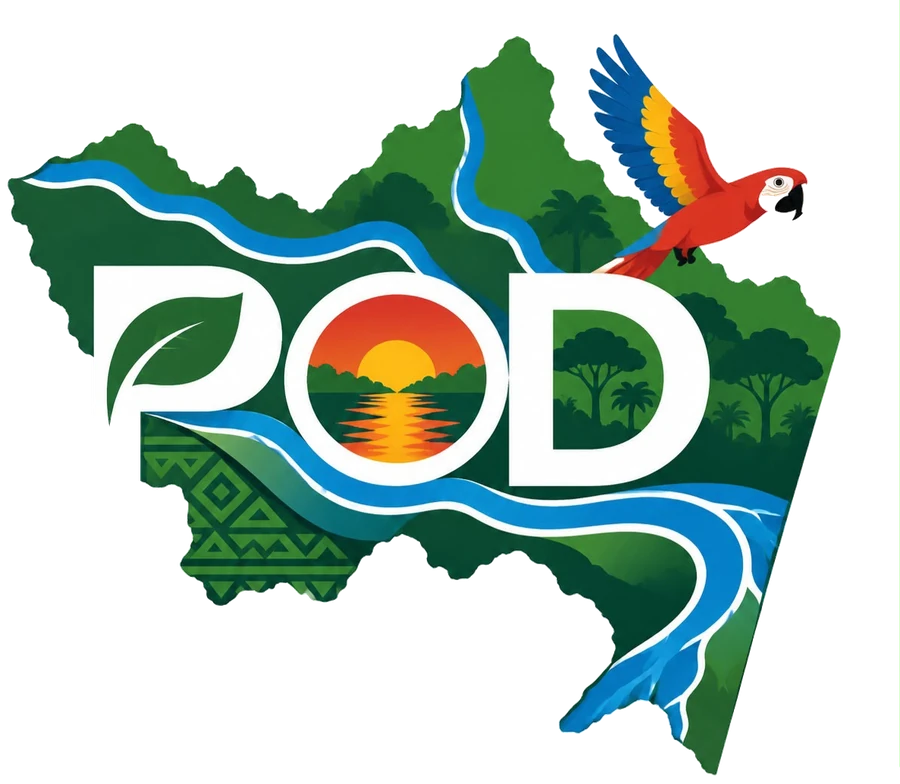

Observatorio Departamental del Amazonas
Descubre el Amazonas, capa por capa.
Recorre sus ríos, su selva y sus territorios. Consulta mapas, documentos e indicadores para entender cómo se planea su futuro.
Enciende una capa
Sigue el recorrido del agua que conecta a los municipios y las comunidades del departamento.

¿Por dónde quieres empezar?
GeovisorActiva, combina y consulta capas individuales en el mapa.Entrar →
GeoportalElige mapas temáticos listos, organizados por categoría.Entrar →
Avances del PODConsulta los reportes de seguimiento publicados.Entrar →
Biblioteca DigitalEncuentra documentos e información departamental.Entrar →
Documentos del PODRevisa las fases del Programa de Ordenamiento.Entrar →
Certificados ambientalesConsulta la orientación ambiental.Entrar →
ARTICULACIÓN INTERINSTITUCIONAL
16 entidadesTrabajamos con entidades aliadas del territorio
Entidades que contribuyen y articulan procesos con la Secretaría de Planeación y Desarrollo Territorial del Amazonas.
Los enlaces abren las páginas indicadas por el equipo POD. Logos sujetos a disponibilidad de las fuentes externas.
OPORTUNIDADES PARA LA CIUDADANÍA
Convocatorias abiertas y cursos gratuitos
Consulta oportunidades y visita directamente las páginas de inscripción de cada entidad organizadora.
Actualmente no se han cargado convocatorias ni cursos verificados para esta versión.
Antes de postularte, verifica condiciones, fechas y requisitos en el sitio oficial de la convocatoria.
Un observatorio construido alrededor de la información del territorio.
Planificación · Gestión del riesgo · Transparencia · Seguimiento del desarrollo
EXPLORACIÓN GEOGRÁFICA ·
Geovisor del Amazonas
Explora las Capas del Observatorio de manera independiente, consulta sus atributos y analiza estadísticas disponibles por capa.
Mapa interactivo
Para visualizar el mapa base necesitas conexión a internet.
Haz clic en el mapa para consultar coordenadas
OpenStreetMap · base externa Capas del ObservatorioLas mediciones son orientativas y no constituyen resultados oficiales.
CATÁLOGO CARTOGRÁFICO ·
Información territorial por temática
Explora las siete categorías de cartografía. Al seleccionar una temática accederás al Geovisor, donde podrás activar, acercar o ajustar la transparencia de las Capas del Observatorio.
Determinantes ambientales: consulta las 33 determinantes disponibles. Las trece rondas hídricas comparten una capa. Cada capa se descarga cuando la enciendes.
7Categorías previstas
3Carpetas fuente identificadas
33Determinantes disponibles
EXPLORAR CATÁLOGO
Temáticas territoriales
FUENTES YA IDENTIFICADAS
Carpetas cartográficas en Google Drive
Se han localizado estos repositorios de origen. No implica que sus capas estén procesadas, autorizadas para publicarse individualmente ni disponibles en el mapa. Los enlaces requieren permisos de Drive.
Próxima integración
Cuando se apruebe el inventario de capas, utilizaremos servicios compatibles con GeoServer/PostGIS o GeoNode. Desde entonces cada capa podrá mostrar metadatos, atributos, simbología, permisos y descarga autorizada. Esta versión no presenta resultados cartográficos oficiales.
OBSERVATORIO DEPARTAMENTAL · CUMPLIMIENTO DE METAS
Sin resultados oficiales publicados
Seguimiento al cumplimiento del POD
Explora los 57 indicadores y las metas identificadas en la matriz de seguimiento del Plan de Ordenamiento Departamental del Amazonas.
Seguimiento del POD.
Los indicadores y las metas proceden de la matriz del POD. Los avances se mostrarán cuando existan reportes revisados y publicados. Las cifras calculadas en el navegador no son oficiales.
57 indicadores y 59 metas: 56 indicadores tienen una meta y uno tiene tres. El cumplimiento de cada indicador se calcula promediando sus metas. El de cada apuesta se calcula promediando sus indicadores completos. Sin información no equivale a 0 %.
DATOS OFICIALES PUBLICADOS
Reportes de seguimiento POD
Esta sección consulta directamente los registros con estado publicado en Supabase. Los borradores no se muestran. Los valores acumulados no representan porcentajes de cumplimiento.
Cargando reportes publicados...
Los valores sin reporte se muestran como «Sin información», no como 0 %. Los cálculos del navegador incluyen solo indicadores con todas sus metas y evidencias registradas como aprobadas. Cada apuesta resume el promedio simple de sus indicadores completos; los resultados parciales se identifican como tales. Estas cifras no son oficiales.
SEGUIMIENTO POR APUESTA
Abre cada apuesta para consultar sus indicadores y acceder al detalle de metas y evidencias.Cuatro apuestas estratégicas del POD
Selecciona una apuesta para desplegar todos sus indicadores. Los porcentajes se calculan solo a partir de metas validadas y sustentadas por evidencias documentales.
CATÁLOGO DE INDICADORES
Cada indicador muestra metas, avance validado y enlaces a evidencias documentales cuando existan.Indicadores y metas
INTEGRACIÓN FUTURA
El informe definitivo se configurará con las metas y los avances validados.Dashboard de Power BI
ANÁLISIS INTERACTIVO
Sin informe institucional asociado
Dashboard de Power BI
Informe interactivo del PODEspacio reservado para el dashboard institucional
El informe del POD aparecerá aquí
El diseño está preparado para mostrar un dashboard de Power BI. Todavía no tenemos su enlace de inserción autorizado ni acceso al conjunto de datos oficial.
Sin cifras ficticias · Sin conexión automática todavíaVista previa de un informe autorizadoEl acceso depende de los permisos de Power BI.
¿Ya tienes un enlace de Power BI?
Puedes abrir un informe mediante su enlace de inserción autorizado. El enlace no se guarda ni cambia la publicación del informe.
Aún no se ha introducido un enlace.
Seguridad: usa solo informes autorizados para consulta pública o institucional. Los informes privados pueden requerir iniciar sesión en Power BI y licencias adecuadas. Un enlace de Google Drive no sustituye al enlace del informe.
ORIENTACIÓN CIUDADANA
Certificado de compatibilidad ambiental
Información para orientar tu consulta sobre un predio y la actividad que deseas desarrollar.
La solicitud en línea estará disponible próximamente
¿Qué es?
El certificado de compatibilidad ambiental tiene como propósito informar sobre la compatibilidad de una actividad o un proyecto con las determinantes ambientales y los instrumentos de ordenamiento aplicables a un predio.
Su alcance, revisión y expedición dependen de la autoridad competente. No reemplaza las licencias, permisos ni autorizaciones que correspondan. Consultar el Geovisor no equivale a obtener un certificado.
Requisitos e información para tu consulta
Confirma con el equipo POD los requisitos vigentes y la entidad competente antes de iniciar el trámite. Para orientar tu consulta, prepara:
- Municipio o área no municipalizada (ANM) y ubicación general del predio.
- Actividad o proyecto propuesto y una descripción de su alcance.
- Información cartográfica de apoyo, si dispones de ella, sin localizaciones comunitarias sensibles.
Esta información no constituye una lista oficial de documentos exigibles. Los documentos, costos y plazos del procedimiento deben confirmarse con la entidad responsable.
Normativa de referencia
Este es un marco general para la consulta ambiental y territorial; no establece por sí solo los requisitos ni la competencia para expedir este certificado.
- Ley 99 de 1993Organización del Sistema Nacional Ambiental y gestión ambiental.
- Ley 388 de 1997Ordenamiento territorial y articulación con las determinantes ambientales.
- Decreto 1076 de 2015Decreto Único Reglamentario del Sector Ambiente y Desarrollo Sostenible.
Contacto
Solicita orientación al equipo del Programa de Ordenamiento Departamental del Amazonas.
Esta página no recibe solicitudes ni archivos. No adjuntes documentos de identidad o información confidencial sin recibir indicaciones del canal institucional.
Formulario de demostración
Demostración: muestra cómo funcionará la solicitud en línea. No radica solicitudes, no envía datos y no genera certificados.
Usa únicamente datos ficticios. No ingreses datos reales ni selecciones documentos personales.
SERVICIO PROYECTADO DEL OBSERVATORIO
Un trámite claro, con seguimiento y soporte cartográfico.
El diseño se organiza en cinco etapas. En el futuro, la solicitud y los documentos serán revisados por el personal competente, y las coordenadas se contrastarán con información territorial oficial vigente.
Entorno de prueba: no es un trámite oficial. Este formulario no radica solicitudes, no envía archivos, no consulta restricciones ambientales reales y no genera certificados. Usa datos ficticios durante la demostración.
01
INFORMACIÓN DEL PROYECTO
Cuéntanos sobre el proyecto
Datos que identifican al proyecto, su sector, el solicitante y el área de intervención. En esta prueba utiliza información ficticia.
* Campos necesarios para esta demostración. La ficha definitiva y los datos personales exigibles se definirán con la dependencia competente.
02
DOCUMENTACIÓN REQUERIDA
Adjunta los soportes que correspondan
Estos documentos se muestran como referencia de la presentación institucional. Su exigencia depende del tipo de proyecto y de las reglas del trámite que apruebe la autoridad competente.
Por seguridad, los archivos seleccionados no se cargan a ningún servidor. La demostración utiliza los nombres de los archivos ficticios seleccionados, no su contenido.
1. Documentos emitidos por la autoridad indígena
Selecciona los tres soportes por separado o utiliza la alternativa de documento unificado.
Nota institucional propuesta: Estos soportes se solicitarían a la autoridad indígena competente, en el marco del gobierno propio. La exigencia concreta y la exclusividad de expedición requieren validación jurídica institucional. Consultar Decreto 632 de 2018 ↗
2. Acreditación de la autoridad indígena
Selecciona una de las dos alternativas y adjunta el soporte correspondiente.
3. Documento de identidad de la autoridad indígena
El documento de identidad es sensible. En este prototipo solo permite seleccionar un archivo ficticio; no cargues identificaciones reales.
Entorno de demostración sin envío ni almacenamiento de documentos. En producción se requiere autenticación, infraestructura segura y tratamiento adecuado de datos personales.
03
LOCALIZACIÓN GEOGRÁFICA DEL PROYECTO
Delimita el área de intervención
Selecciona un punto, una línea o un polígono. Puedes escribir las coordenadas de cada vértice o hacer clic sobre el mapa para agregarlas. Usamos grados decimales WGS84 (EPSG:4326).
Ubicación puntual0 de 1 puntos completos
Introduce una latitud y una longitud en grados decimales WGS84 (EPSG:4326), o selecciona el lugar en el mapa.
Coordenadas del puntoPendiente
Ubicación pendiente de definir.
Importar polígono desde Excel
Si tienes muchos vértices, no necesitas escribirlos uno por uno.
Encabezados de la plantilla: N. De punto | Lat | Lon. Hasta 300 vértices, coordenadas decimales WGS84. El polígono se cierra automáticamente.
Selecciona un archivo .xlsx para visualizar las coordenadas en el mapa. No se enviará a ningún servidor.
En polígonos, registra al menos 3 vértices distintos; la figura se cerrará automáticamente. Las distancias y áreas calculadas son aproximadas. La geometría permanece en tu navegador: no se envía al Drive ni se analiza contra determinantes ambientales oficiales.
04
VALIDACIÓN MEDIANTE GEOPORTAL
¿Qué revisará la validación espacial?
En una versión futura, la ubicación se contrastará con capas oficiales, documentando las fuentes utilizadas y su fecha de actualización.
Áreas protegidasSin evaluar
Resguardos indígenasSin evaluar
Ecosistemas estratégicosSin evaluar
Determinantes ambientalesSin evaluar
Zonas de restricciónSin evaluar
No se ha ejecutado un análisis espacial.
«Sin evaluar» no significa «compatible» ni «sin restricciones». Este paso necesitará las capas oficiales vigentes del POD, su autoridad de origen, reglas de intersección y revisión técnica.
05
REVISIÓN Y GENERACIÓN AUTORIZADA
Resumen de la solicitud de prueba
Revisa los datos ingresados. En el sistema definitivo, un funcionario habilitado podrá completar la evaluación, registrar la decisión y emitir el concepto que corresponda.
Información que incluiría un documento autorizado
Identificación del proyecto, ubicación geográfica, determinantes identificadas, conclusión técnica, fecha y responsable competente.
Estado del trámite
Sin radicación. No existe número de solicitud, análisis espacial realizado, concepto de compatibilidad ni firma institucional.
El resumen se crea únicamente en tu navegador y no es una certificación ambiental.
CENTRO DOCUMENTAL · FUENTE GOOGLE DRIVE
Catálogo documental · Estado de actualización indicado abajoBiblioteca Digital
Consulta los estudios, documentos técnicos y publicaciones de la Biblioteca de información departamental del Amazonas, siguiendo su organización original en Google Drive.
—Categorías identificadas
—Documentos del catálogo
DriveRepositorio de origen
El repositorio documental está en Google Drive. El catálogo puede actualizarse mediante la integración técnica una vez autorizada y activada. Datos de referencia: sincronización aún no activada.
Explorar las carpetas originales
Accede a los repositorios completos por temática y escala territorial. Los archivos que no aparecen en el catálogo actual pueden encontrarse en estas carpetas, siempre que tu cuenta tenga permiso de lectura.
Acceso a documentos en Google Drive
Los documentos permanecen en Google Drive. Algunos requieren autorización para abrirse o descargarse. La inclusión de un enlace no cambia sus permisos ni concede derechos de reutilización: consulta las condiciones del documento y de su entidad responsable.
ORDENAMIENTO TERRITORIAL · FUENTE GOOGLE DRIVE
Enlaces sujetos a permisos de DriveDocumentos del POD
Consulta el catálogo de documentos del Plan de Ordenamiento Departamental del Amazonas, organizado de acuerdo con las carpetas identificadas en Google Drive.
Datos de referencia: sincronización aún no activada.
—PDF identificados en Drive
—Enlaces para consulta *
* Los enlaces abren Google Drive. La disponibilidad pública no está verificada; el catálogo es una copia de referencia, no una sincronización automática.
Consulta de documentos en Google Drive
Este catálogo reúne archivos identificados en las carpetas de origen. Algunos requieren autorización de Google Drive para abrirse. El Observatorio no modifica sus permisos de acceso.
Organización de origen
Las carpetas del Drive están nombradas Alistamiento, Diagnóstico, Formulación, Implementación y Armonización. Esa estructura difiere de las fases conceptuales de la presentación; se preservan los nombres del repositorio real.
ACERCA DE LA PLATAFORMA
Información para la planeación territorial
Una propuesta de la Secretaría de Planeación y Desarrollo Territorial orientada a reunir y organizar información territorial del Amazonas.
¿Qué busca lograr el Observatorio Departamental del Amazonas?
Centralizar la información geográfica, facilitar el acceso ciudadano e institucional, transformar los datos en herramientas de decisión y fortalecer la transparencia sobre el seguimiento del POD.
Explorar categoríasConsulta pública de información autorizada.
Gestión institucional con permisos.
Organización de datos espaciales y documentales.
Seguimiento a proyectos e indicadores.
DIRECTORIO INSTITUCIONAL
13 dependenciasDependencias de la Secretaría
Selecciona una dependencia para escribir a su correo de contacto. No se envía ningún mensaje automáticamente.
✉Seguimiento al Plan de desarrollo departamentalseguimientoplandesarrollo@amazonas.gov.co✉Modelo integrado de Planeación y gestión (MIPG)mipg@amazonas.gov.co✉PODpod@amazonas.gov.co✉Infraestrurainfraestructura@amazonas.gov.co✉Competitividad Amazonascompetitividad@amazonas.gov.co✉Cooperación internacionalcooperacioninternacional@amazonas.gov.co✉Plan departamental de aguaspda@amazonas.gov.co✉Dirección de ciencia, tecnología e innovación (TICS)cienciatecnologia@amazonas.gov.co✉Banco de programas y proyectosbcoproyectos@amazonas.gov.co✉Formulación de proyectosformulacionamazonas2026@gmail.com✉Regaliasregalias@amazonas.gov.co✉Resguardos Indigenasresguardosindigenas@amazonas.gov.co✉Politica Socialcpoliticasocial@amazonas.gov.co
Directorio suministrado por el equipo POD. Los correos están sujetos a actualización institucional.
CANALES INSTITUCIONALES
Contacto
Escríbenos a los canales institucionales correspondientes.
OBSERVATORIO DEPARTAMENTAL · EQUIPO POD
Disponible próximamentePanel institucional colaborativo
La gestión de solicitudes y los servicios de esta sección estarán disponibles cuando se habilite el acceso institucional autorizado.